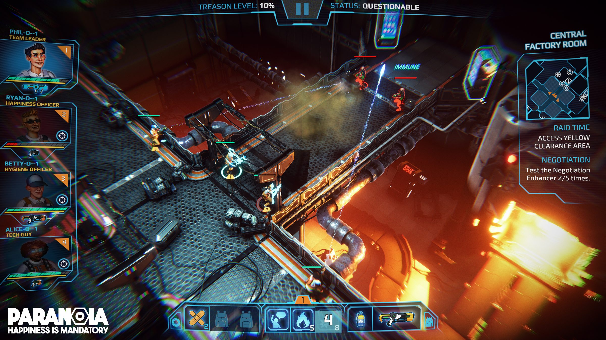
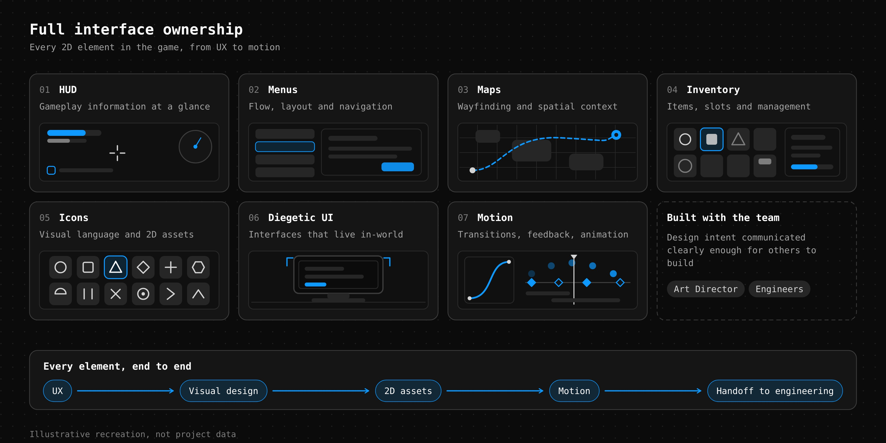

What I owned
HUD, menus, maps, inventory, icons, diegetic UI and motion.
Experience Designer
End-to-end UI/UX · Early career
My first game-industry role was a two-year trial by fire. Working directly with the Art Director on a small team, I owned the game's entire 2D interface.

01 / End-to-end ownership
I designed and created everything from the UX and visual design through to the 2D assets and motion graphics.
HUD, menus, maps, inventory, icons, diegetic UI and motion.
On a small team, I worked directly with the Art Director and engineers, learning to communicate design intent clearly enough for others to build.

02 / Career reflection
Paranoia was where I discovered that I enjoyed solving interaction and information problems more than producing large quantities of UI art.
Working across the full interface helped me connect interaction design, visual hierarchy, asset creation and implementation.
It became the foundation for the more systems-focused UX work I pursued in later projects.